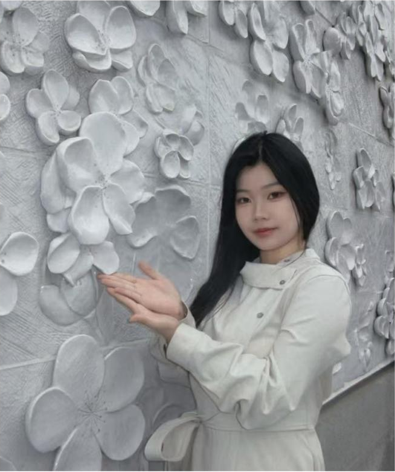

PRODUCT & INTERACTION DESIGN你好，
你好，
我是王雨溪.
产品设计师 / Product designer
在真实需求与细腻感受之间，
寻找设计的可能，让生活多一点温度。
01 / ABOUT ME观察生活，
观察生活，
回应真实的需要。
细致观察 · 保持好奇
以使用者的感受为起点
以使用者的感受为起点
关于我 / 王雨溪
我喜欢从日常生活中发现问题，并尝试用设计寻找更合适的解决方式。
我性格细致、踏实，对新事物保持好奇，也习惯站在使用者的角度思考。希望自己的设计能够真正回应需求，为生活带来一点温度。
设计方向
产品设计 · 用户研究
用户体验 · 服务设计
设计工具
Rhino 8 / KeyShot / Figma
Photoshop / Illustrator / After Effects
实习经历
产品手册创作实习2025.06 — 2025.09
无界矩阵科技有限公司
网页界面设计2025.12 — 2026.01
Siemens 西门子
宣传设计2026.07 — 2026.10
清颌智臻
02 / SELECTED WORKS每一个设计，